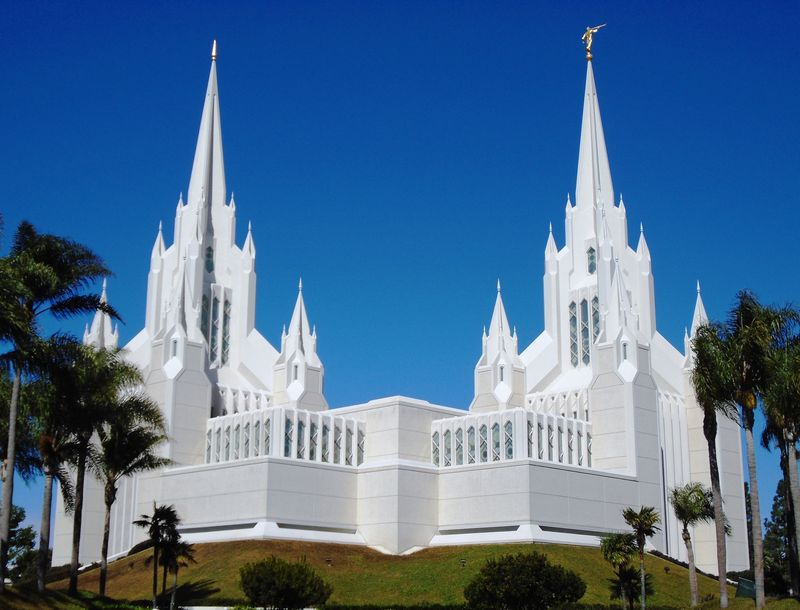
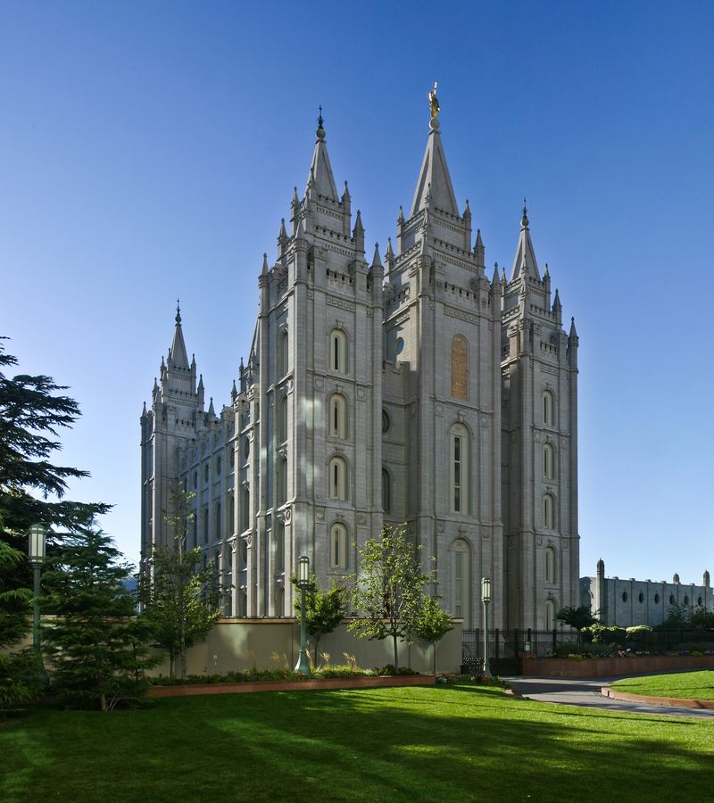
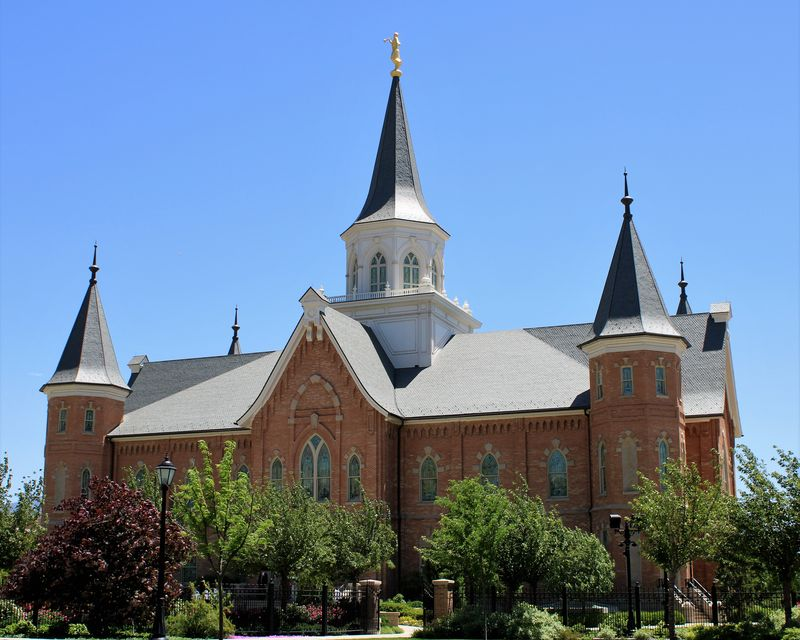
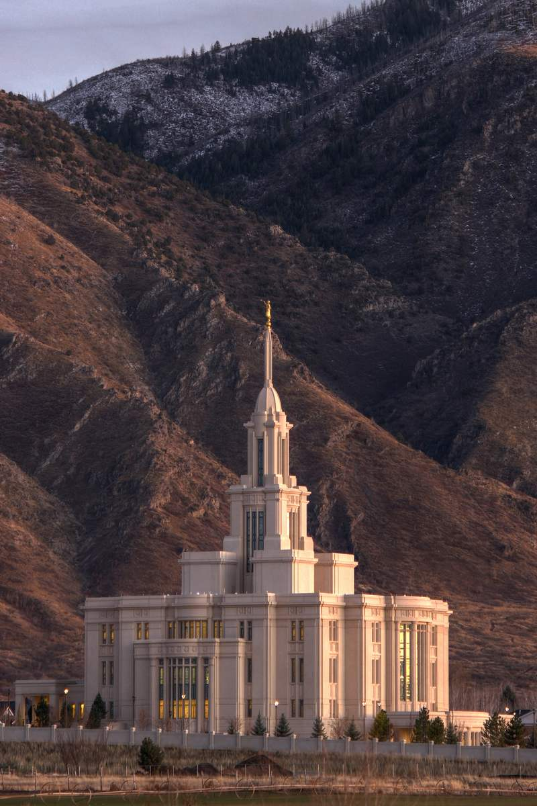
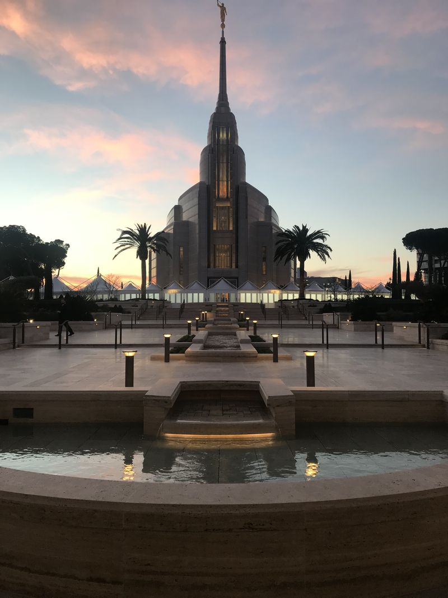
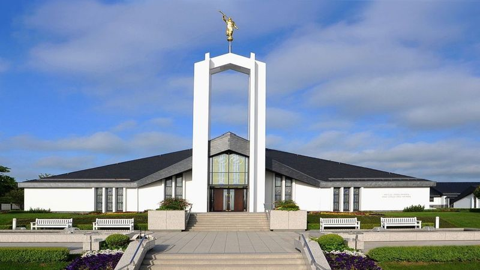
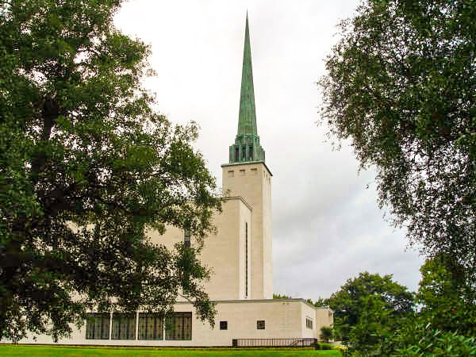
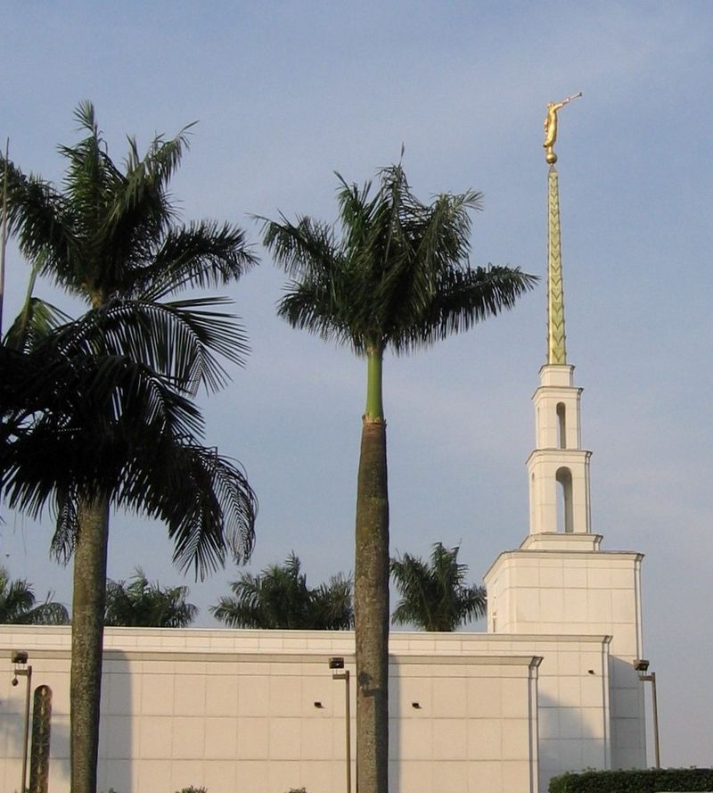
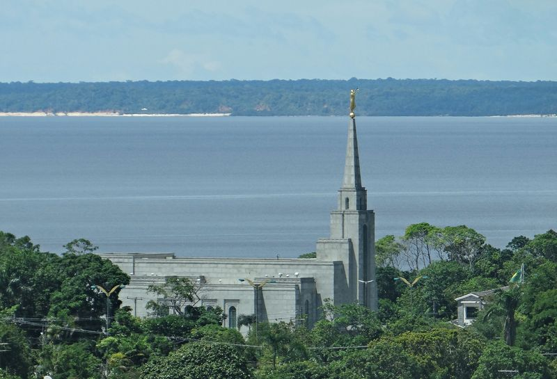

Home


















Temple photos via Wikimedia Commons — Beyond My Ken, Diliff, Farragutful, Evanmanning, Mbattista22, WildO, MTPICHON, Antipus and Gabriel Smith, used under CC BY / CC BY-SA licenses.